From film to drift
Eleven videos, eleven games. Each video was read for what it does, and what it does became a rule you can play. Watch on the left, play on the right: the right column is the game itself, recorded in cinema mode.
01 /The Drifts
Open water, seen from the side. No buttons: hold the water to swim, tap a jelly-film to take it, hold on it to see it clearly, double-tap to pulse. Press H (or tap with three fingers) to hide every word on the screen.
02 /Every Version
Each one is kept playable, newest first. From v4 on, films near the jelly come clear as their real footage, and the farthest water plays one film full and faint.
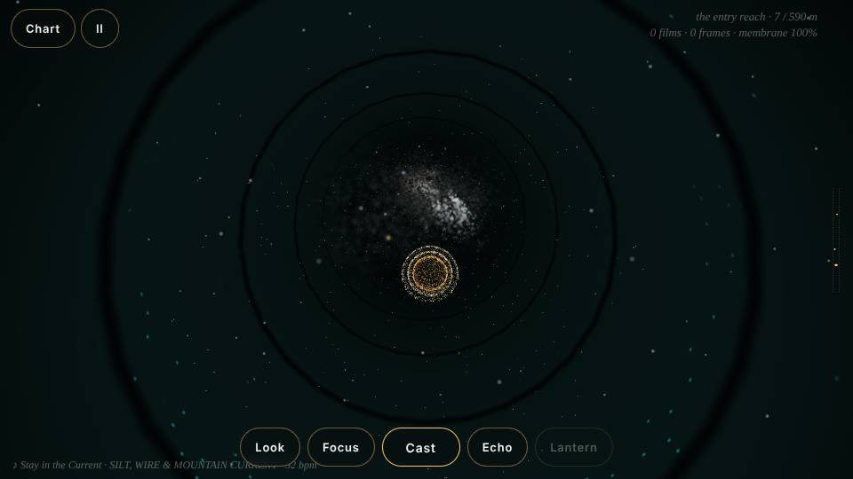
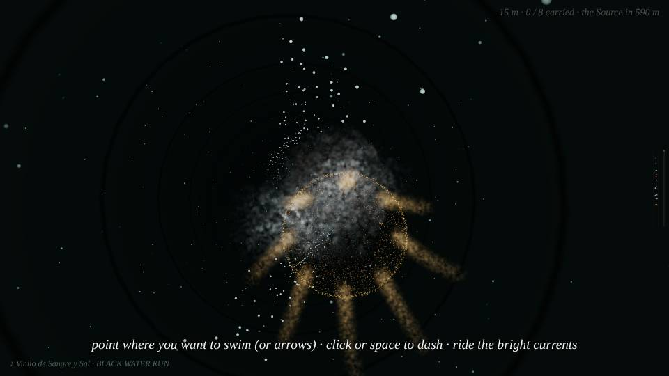
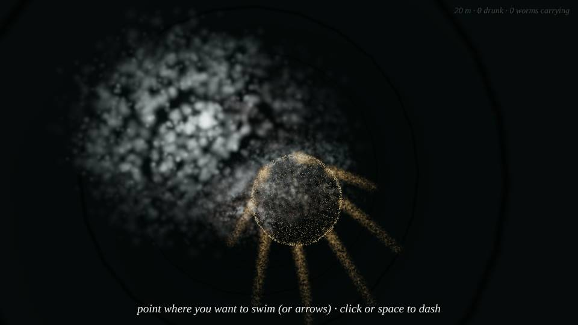
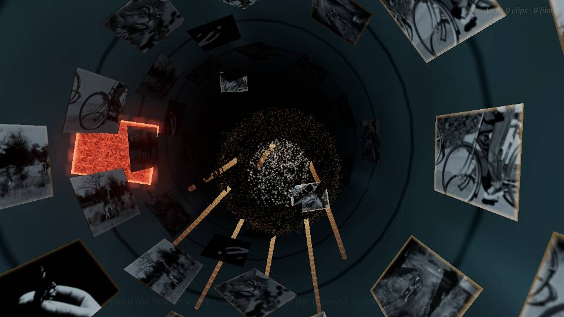
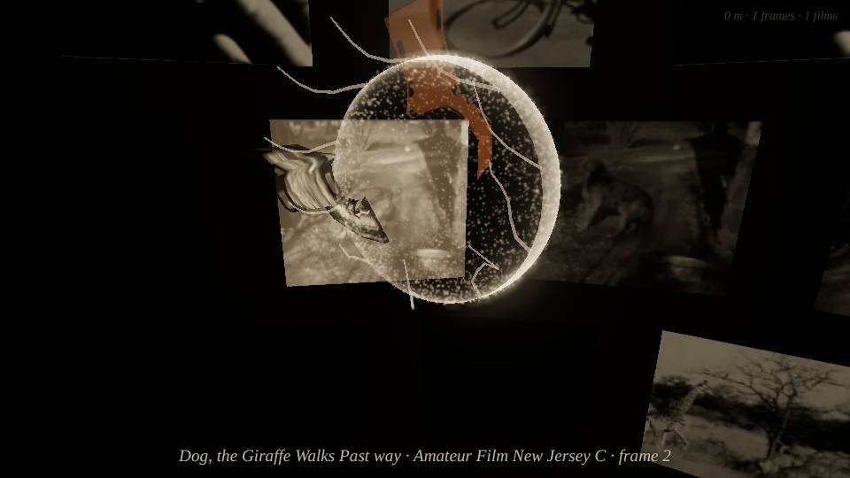
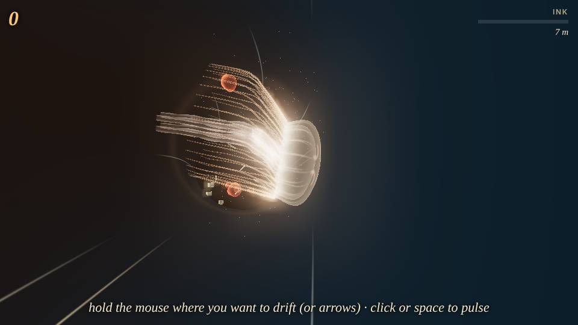
03 /The Lab
The first jelly tools, the sound, the notes and instructions, and the archives everything is made from.
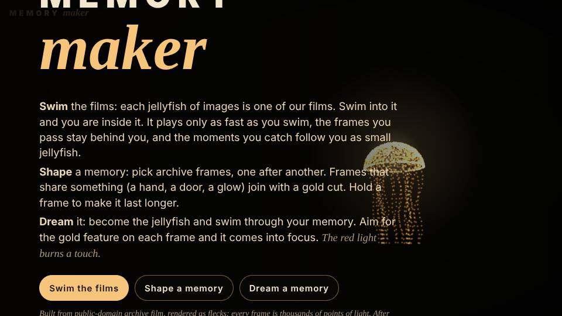
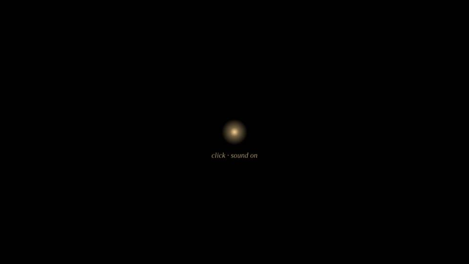
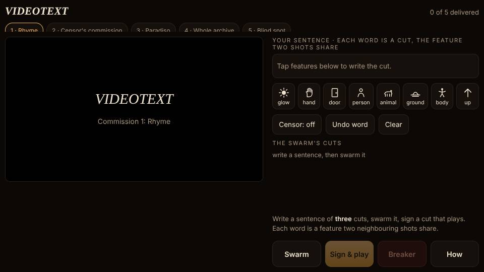
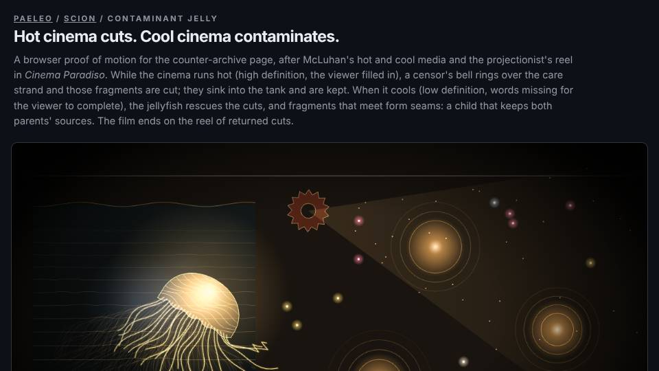

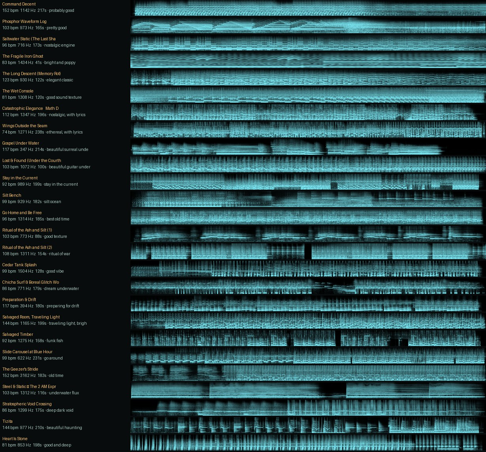

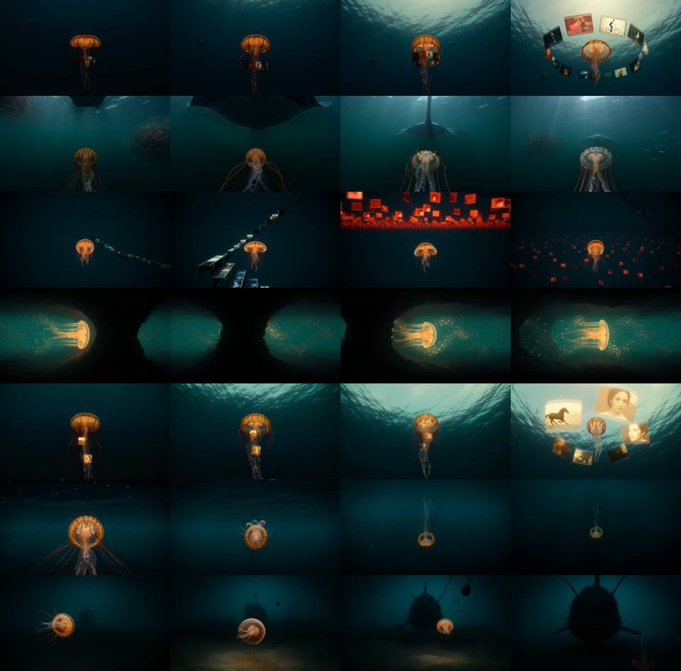
- DRIFTS.mdVideo → game translations; archive levels; jelly-films, screens, radar, the angler, cinema and trailer modes.
- NOTES.mdThe Branching Archive, v6.
- SONG2GAME.mdHow the songs map onto levels, with matched starts.
- SCION · Branching ArchiveSystem instruction for v6.
- SCION · Ludic EngineMechanics, powerups, length and goals.
- SCION · Golden RiverbedCreatures, currents, minimap, multiplayer.
- SCION · InterfaceReticles in place of buttons.
- SCION · Void Surfacev5.
- SCION · Never a Framev4.
- SCION · Strand PhysicsArms and tentacles.
- Notes v5 · v4 · v3 · v2 · v1v4 · v3 · v2 · v1
- secondhand-motion86 traced subjects, 1,777 drawn keys: the doodles.
- cineosis-lab45 signs, 809 shots, clips with sound: the cineosis levels.
- bolasThe drawn worms’ planes and tracks, and the PAELEO / SCION source.